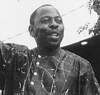

Faktaservice nr. 4 95/96, NOVEMBER 1995
NIGERIA AVVISTE VERDENS PROTESTER:
Ken Saro-Wiwa

- Ken Saro-Wiwa er Nigerias mest populære forfatter. Han var også journalist, miljø- og menneskerettighetsforkjemper, sier generalsekretæren i den sør-afrikanske forfatterforeningen, Morakabe Raks Seakhoa, som for tiden er i Oslo.
- Anklagene mot Saro-Wiwa om å ha medvirket til mord på fire personer er en ren forfalskning.
Ken Saro-Wiwa har sittet i fengsel i halvannet år. Han tilhører en av Nigerias mange minoriteter og kommer fra Ogoni- provinsen.
- Denne provinsen er utsatt for en økologisk katastrofe. Oljeselskapene har nærmest asfaltert områder som tidligere levde av jordbruk og fiske. Det dreier seg her om stor-industriell utnyttelse med det sør-afrikanske oljeselskapet Shell i spissen.
Saro-Wiwa startet i 1990 en protestbevegelse mot miljøødeleggelsene, og for at ogoniene skulle sikres en del av oljeinntektene som en kompensasjon for å ha mistet hele sitt livsgrunnlag. Denne bevegelsen kulminerte i en fredelig demonstrasjon med oppslutning av ikke mindre enn 300 000 deltagere, eller hele 60 prosent av befolkningen.
Reaksjonene lot ikke vente på seg. Politi og soldater foretok straffeekspedisjoner inn i Ogoniland, og drepte et ukjent antall innbyggere. Senere har militærregjeringen sørget for en kontinuerlig forfølgelse av ogonifolket, med systematiske mord, trakasseringer, voldtekter og brenning av landsbyer.
Miltærdiktatur
Fire ogonihøvdinger som var kjent for å være regjeringsvennlige, ble drept av en ungdomsgjeng i mai 1994 i kjølvannet av miljøopprøret. Hva var mer opportunt for militærdiktaturet enn å arrestere den ikke-voldelige, men plagsomme Saro-Wiwa for å ha "oppfordret" til disse drapene?Saro-Wiwa har vært arrestert tidligere for sin kritikk av forskjellige mer eller mindre autoritære nigerianske regimer, men i de seneste årene under general Abacahas militærdiktatur er undertrykkelsen bare blitt verre. Forfattere og andre intellektuelle blir nådeløst forfulgt, det er innført pressesensur, og mange har flyktet fra landet. Dette gjelder for eksempel nobelprisvinneren i litteratur, Wole Soyinka, som nå befinner seg i Europa.
Kilder: Kilde: Rolf E. Moe og Kaja Korsvoll, Aftenposten
[Innhold] [Info]
[Aftenposten hjemmeside] [Til Fakta hovedside]